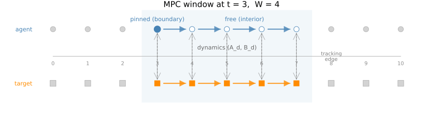
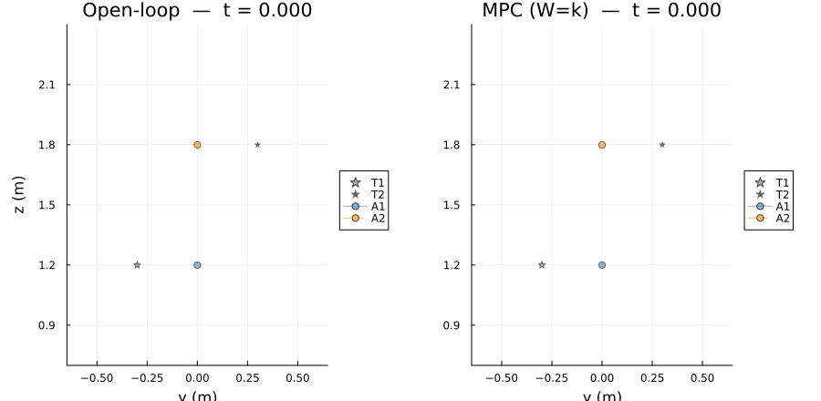
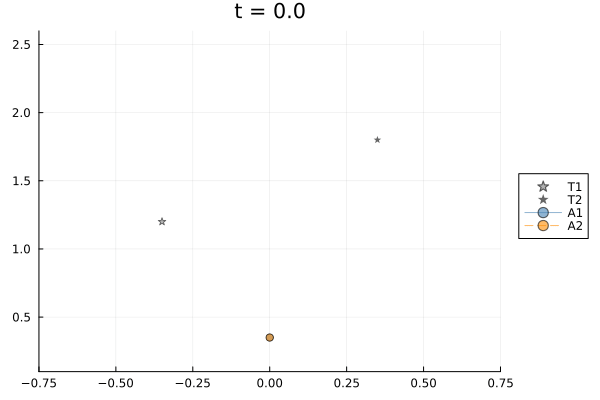
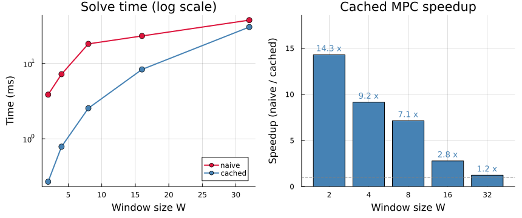

Receding-Horizon MPC via a Cached Harmonic Extension
This example is the closed-loop counterpart of Multi-Agent Target Tracking via a Time-Expanded Cellular Sheaf. There, a single time-expanded sheaf is solved over the whole horizon and the energy-minimizing global section is read off directly. Here we build a model-predictive controller (MPC) that re-plans at every timestep and show that the time-homogeneity of the tracking sheaf collapses each per-step solve into a single matrix-vector product.
Vehicle model. Each agent is a planar quadrotor with state $x = [y,\,z,\,\varphi,\,\dot y,\,\dot z,\,\dot\varphi]^\top \in \mathbb{R}^6$ and control $u = [T_1,T_2]^\top \in \mathbb{R}^2$, linearized about hover and discretized by zero-order hold at period $h$.
Sheaf structure. The time-expanded sheaf has one vertex per $(\text{entity},\, t)$ pair with stalk $\mathbb{R}^{n_x+n_u}$. Three edge families encode:
- Dynamics: $x_{t+1} = A_d x_t + B_d u_t$ for each agent and target.
- Consensus: inter-agent agreement on a chosen coordinate subspace.
- Tracking: agent-target alignment in a chosen coordinate subspace.
MPC formulation. At each timestep $t$ the controller:
- Extracts the window sub-problem on $[t,\, t+W]$.
- Pins the current agent state and the next $W$ target samples as boundary $B$.
- Solves for the free interior vertices $I$ via harmonic extension, finding the section of minimum Laplacian energy consistent with the boundary:
\[x_I = -L_{II}^{+} L_{IB}\, x_B.\]
- Applies only the first control $u_t$, advances the true dynamics, and repeats.
When $L_{II}$ is singular its nullspace $N = \ker L_{II}$ represents free coordination degrees of freedom. A control cost $Q$ selects the cost-optimal representative via the projection
\[M = \bigl(I - N(N^\top Q N)^{+} N^\top Q\bigr)\bigl(-L_{II}^{+} L_{IB}\bigr),\]
so that every per-step solve is the single dense matvec $x_I = M\, x_B$.
The problem-construction and solve utilities used below come from CellularSheaves.ControlSheaves.MultiAgentTracking.
- Problem specification is written with
@tracking_problemfromCellularSheaves.ControlSheaves.TrackingDSL. - The open-loop solver pipeline is
build_boundary -> run_scenario. - The closed-loop pipeline is
run_mpc_scenario. - Animations are produced by
animate_tracking_xy, implemented by the plotting extension whenPlotsis loaded.
using CellularSheaves
using CellularSheaves.ControlSheaves.MultiAgentTracking
using CellularSheaves.ControlSheaves.TrackingDSL
using CellularSheaves.TrajectorySheaves: continuous_to_discrete_zoh
using LinearAlgebra
using Printf
using PlotsSliding-Window Structure
The diagram below shows one MPC step at $t = 3$ with window $W = 4$. Filled vertices are pinned (boundary $B$) and open vertices are solved (interior $I$). Arrows within the window show the dynamics edges $(A_d, B_d)$ and dashed vertical arrows show the tracking edges.
let
k_d = 10
t_now = 3
W_d = 4
t_end = t_now + W_d
ay = 0.85
ty = -0.85
p = plot(size=(860, 230), legend=false, framestyle=:none,
xlims=(-0.8, k_d + 0.5), ylims=(-1.45, 1.45),
title="MPC window at t = $t_now, W = $W_d",
titlefontsize=11)
vspan!(p, [t_now - 0.45, t_end + 0.45]; color=:steelblue, alpha=0.07, label="")
plot!(p, [0, k_d], [0.0, 0.0]; color=:gray70, lw=1)
for t in 0:k_d
annotate!(p, t, -0.22, text("$t", 7, :center, :gray55))
end
for t in t_now:t_end-1
for (row, col) in ((ay, :steelblue), (ty, :darkorange))
plot!(p, [t + 0.18, t + 0.82], [row, row];
color=col, lw=1.6, arrow=(:closed, 0.3), alpha=0.8)
end
end
for t in t_now:t_end
plot!(p, [t, t], [ay - 0.13, ty + 0.13];
color=:gray50, lw=1, ls=:dash, alpha=0.6, arrow=(:both, 0.22))
end
for t in 0:k_d
in_w = t_now <= t <= t_end
fill_a = (t == t_now) ? :steelblue : (in_w ? :white : :lightgray)
scatter!(p, [t], [ay]; color=fill_a,
markerstrokecolor=(in_w ? :steelblue : :gray70),
markerstrokewidth=2, markersize=(t == t_now ? 8 : 6), markershape=:circle)
scatter!(p, [t], [ty]; color=(in_w ? :darkorange : :lightgray),
markerstrokecolor=(in_w ? :darkorange : :gray70),
markerstrokewidth=2, markersize=6, markershape=:rect)
end
annotate!(p, -0.6, ay, text("agent", 8, :right, :steelblue))
annotate!(p, -0.6, ty, text("target", 8, :right, :darkorange))
annotate!(p, t_now, ay + 0.32, text("pinned (boundary)", 8, :center, :steelblue))
annotate!(p, t_now + 2.5, ay + 0.32, text("free (interior)", 8, :center, :steelblue))
annotate!(p, t_now + W_d/2, 0.28, text("dynamics (A_d, B_d)", 8, :center, :gray40))
annotate!(p, t_end + 1.0, (ay+ty)/2, text("tracking\nedge", 7, :center, :gray50))
p
end
Planar Quadrotor Dynamics
State: $x = [y, z, \varphi, \dot y, \dot z, \dot\varphi]$. The linearisation is taken around the hover trim condition. Dynamics, projection matrices, bobbing targets, and helper utilities are set up identically to the open-loop example.
g = 9.81
m_veh = 0.5
I_quad = 0.01
ell = 0.25
Ac = [0.0 0.0 0.0 1.0 0.0 0.0;
0.0 0.0 0.0 0.0 1.0 0.0;
0.0 0.0 0.0 0.0 0.0 1.0;
0.0 0.0 -g 0.0 0.0 0.0;
0.0 0.0 0.0 0.0 0.0 0.0;
0.0 0.0 0.0 0.0 0.0 0.0]
Bc = [0.0 0.0;
0.0 0.0;
0.0 0.0;
0.0 0.0;
1.0 / m_veh 1.0 / m_veh;
ell / (2I_quad) -ell / (2I_quad)]
h = 0.05
Ad, Bd = continuous_to_discrete_zoh(Ac, Bc, h)
nx = size(Ad, 1)
nu = size(Bd, 2)
IDX_Y = 1
IDX_Z = 2
IDX_ZDT = 5
k = 40
times = h .* collect(0:k)
R_yz = state_projection_matrix([IDX_Y, IDX_Z], nx, nu)
R_y = state_projection_matrix([IDX_Y], nx, nu)
omega = 2π * 2 / (k * h)
bt1 = BobbingTarget(-0.3, 1.2, 0.3, omega)
bt2 = BobbingTarget( 0.3, 1.8, -0.3, omega)
traj_bt1 = trajectory(bt1, 0:k, h, nx, nu, IDX_Y, IDX_Z, IDX_ZDT)
traj_bt2 = trajectory(bt2, 0:k, h, nx, nu, IDX_Y, IDX_Z, IDX_ZDT)
@recipe function f(sr::ScenarioResult)
layout := (1, 2)
size := (800, 380)
plot_title := "$(sr.label): null dim = $(sr.null_dim), ||dz|| = $(@sprintf("%.3e", sr.residual))"
agent_colors = [:steelblue, :darkorange, :green, :crimson]
agent_styles = [:solid, :dash, :dashdot, :dot]
target_colors = [:gray, :black, :darkgreen, :purple]
for (i, traj) in enumerate(sr.agent_trajs)
@series begin
subplot := 1
title := "y(t)"
xlabel := "t (s)"
ylabel := "y (m)"
label := "A$i"
lw := 2
linecolor := agent_colors[i]
linestyle := agent_styles[i]
sr.times, traj[:, sr.y_col]
end
@series begin
subplot := 2
title := "z(t)"
xlabel := "t (s)"
ylabel := "z (m)"
label := "A$i"
lw := 2
linecolor := agent_colors[i]
linestyle := agent_styles[i]
sr.times, traj[:, sr.z_col]
end
end
for (j, traj_j) in enumerate(sr.target_trajs)
@series begin
subplot := 1
label := "T$j"
lw := 1
linecolor := target_colors[j]
linestyle := :dot
sr.times, getindex.(traj_j, IDX_Y)
end
@series begin
subplot := 2
label := "T$j"
lw := 1
linecolor := target_colors[j]
linestyle := :dot
sr.times, getindex.(traj_j, IDX_Z)
end
end
endScenario 1: Bobbing Targets, Open-Loop vs. MPC
Two agents track vertically bobbing targets at opposite lateral positions (T1 at $y=-0.3$, T2 at $y=+0.3$) with anti-phase bobs. A $y$-consensus edge keeps the agents laterally close while $(y,z)$-tracking pulls each agent toward its own target. The setup matches Scenario 2 of the open-loop example.
When open-loop and MPC agree. The two solvers agree to machine precision only on sheaf-consistent problems, where all tracking, consensus, and dynamics constraints can be satisfied simultaneously. On such problems the harmonic section has zero Laplacian energy and $x_{t+1} = A_d x_t + B_d u_t$ holds exactly at every vertex.
When they differ. The nonzero residual is not caused by the dynamics being infeasible — it arises from a structural contradiction between the consensus and tracking edges: consensus demands $R_y x_{a_1}(t) = R_y x_{a_2}(t)$ at every step, while each track edge pulls its agent toward a target at a different lateral position. Since the two targets are not at the same $y$ coordinate, no global section can satisfy both constraints exactly, so the harmonic extension is a minimum-energy compromise over the consensus and tracking edges. The open-loop extractor reads this compromise directly from the sheaf; MPC additionally enforces the true dynamics at every step, so the two trajectories are close but not identical.
prog1 = @tracking_problem begin
agent(a1; dynamics=(Ad, Bd), period=h)
agent(a2; dynamics=(Ad, Bd), period=h)
target(t1)
target(t2)
horizon(K)
times(Tall = 0:K)
consensus(c1; agents=(a1,a2), maps=(R_y,R_y), at=Tall)
track(tr1; agent=a1, target=t1, maps=(R_yz,R_yz), at=Tall)
track(tr2; agent=a2, target=t2, maps=(R_yz,R_yz), at=Tall)
end
ctx1 = Dict{Symbol,Any}(:K => k, :Ad => Ad, :Bd => Bd, :R_y => R_y, :R_yz => R_yz, :h => h)
prob1 = lower_tracking_program(prog1, ctx1; tracking_weight=5.0, consensus_weight=0.8).problem
x0_a1_s1 = [0.0, traj_bt1[1][IDX_Z], 0.0, 0.0, traj_bt1[1][IDX_ZDT], 0.0]
x0_a2_s1 = [0.0, traj_bt2[1][IDX_Z], 0.0, 0.0, traj_bt2[1][IDX_ZDT], 0.0]
bnd1 = Dict{Int,Vector{Float64}}()
for (i, x0) in enumerate([x0_a1_s1, x0_a2_s1])
bnd1[agent_vertex(prob1, i, 0)] = vcat(x0, zeros(nu))
end
for (j, traj) in enumerate([traj_bt1, traj_bt2]), (t, x) in enumerate(traj)
bnd1[target_vertex(prob1, j, t - 1)] = x
end
result1_ol = run_scenario("open-loop", prob1, bnd1, times;
target_trajs=[traj_bt1, traj_bt2], y_col=IDX_Y, z_col=IDX_Z)
result1_mpc = run_mpc_scenario("MPC (W=k)", prob1, [x0_a1_s1, x0_a2_s1],
[traj_bt1, traj_bt2], times;
window=k, cost=1.0, y_col=IDX_Y, z_col=IDX_Z)
show(stdout, MIME("text/plain"), result1_ol); println()
show(stdout, MIME("text/plain"), result1_mpc); println()ScenarioResult:
label : open-loop
null dim : 16
||dz|| : 3.117
agents : 2
targets : 2
ScenarioResult:
label : MPC (W=k)
null dim : 11
||dz|| : 0.6606
agents : 2
targets : 2The side-by-side animation shows open-loop (left) and MPC $W=k$ (right) in the $y$-$z$ plane. Target trails are shown as scatter dots; agent paths accumulate as the simulation advances.
anim1 = @animate for t_idx in 1:k+1
p = plot(layout=(1, 2), size=(900, 440), link=:both)
for (panel, res, title_str) in (
(1, result1_ol, "Open-loop"),
(2, result1_mpc, "MPC (W=k)"))
sp = p[panel]
plot!(sp; title="$title_str — t = $(@sprintf("%.3f", times[t_idx]))",
xlabel="y (m)", ylabel=(panel == 1 ? "z (m)" : ""),
xlims=(-0.65, 0.65), ylims=(0.7, 2.4),
legend=:outerright, aspect_ratio=:equal)
for (j, traj) in enumerate([traj_bt1, traj_bt2])
tx = [v[IDX_Y] for v in traj[1:t_idx]]
tz = [v[IDX_Z] for v in traj[1:t_idx]]
scatter!(sp, tx, tz; color=[:gray, :black][j],
marker=:star5, markersize=4, alpha=0.6, label="T$j")
end
for i in 1:2
plot!(sp, res.agent_trajs[i][1:t_idx, IDX_Y],
res.agent_trajs[i][1:t_idx, IDX_Z];
seriestype=:path, color=[:steelblue, :darkorange][i],
marker=:circle, markersize=4, alpha=0.6,
linestyle=[:solid, :dash][i], label="A$i")
end
end
p
end
gif(anim1, "mpc_side_by_side.gif"; fps=20)[ Info: Saved animation to /home/runner/work/CellularSheaves.jl/CellularSheaves.jl/docs/build/generated/control/mpc_side_by_side.gif
Scenario 2: Effect of Planning Horizon
Both agents start at $(y=0, z=0.35)$, well below and between their targets. Target 1 is at $y=-0.35, z=1.2$ and Target 2 at $y=+0.35, z=1.8$; both complete 3.5 vertical bob cycles over the horizon. A $y$-consensus edge keeps the agents laterally close while $(y,z)$-tracking pulls each agent toward its own target at opposite lateral positions — the same structural tension as Scenario 1, which makes window size matter.
Planning horizon controls reactivity. A shorter window means the controller optimizes over fewer future steps. At $W=2$ the controller is essentially greedy, reacting to the current target position without anticipating the next bob or the consensus constraint. At $W=k$ it plans over the full horizon, finding a smoother compromise between tracking and lateral agreement. Three window sizes are compared.
omega_fast = 2π * 3.5 / (k * h)
bt1_s2 = BobbingTarget(-0.35, 1.2, 0.45, omega_fast)
bt2_s2 = BobbingTarget( 0.35, 1.8, -0.45, omega_fast)
traj_s2_1 = trajectory(bt1_s2, 0:k, h, nx, nu, IDX_Y, IDX_Z, IDX_ZDT)
traj_s2_2 = trajectory(bt2_s2, 0:k, h, nx, nu, IDX_Y, IDX_Z, IDX_ZDT)
prog2 = @tracking_problem begin
agent(a1; dynamics=(Ad, Bd), period=h)
agent(a2; dynamics=(Ad, Bd), period=h)
target(t1)
target(t2)
horizon(K)
times(Tall = 0:K)
consensus(c1; agents=(a1,a2), maps=(R_y,R_y), at=Tall)
track(tr1; agent=a1, target=t1, maps=(R_yz,R_yz), at=Tall)
track(tr2; agent=a2, target=t2, maps=(R_yz,R_yz), at=Tall)
end
ctx2 = Dict{Symbol,Any}(:K => k, :Ad => Ad, :Bd => Bd, :R_y => R_y, :R_yz => R_yz, :h => h)
prob2 = lower_tracking_program(prog2, ctx2; tracking_weight=5.0, consensus_weight=0.8).problem
x0_s2 = [[0.0, 0.35, 0.0, 0.0, 0.0, 0.0],
[0.0, 0.35, 0.0, 0.0, 0.0, 0.0]]
result2_w2 = run_mpc_scenario("MPC W=2", prob2, x0_s2, [traj_s2_1, traj_s2_2], times;
window=2, cost=1.0, y_col=IDX_Y, z_col=IDX_Z)
result2_wk = run_mpc_scenario("MPC W=k", prob2, x0_s2, [traj_s2_1, traj_s2_2], times;
window=k, cost=1.0, y_col=IDX_Y, z_col=IDX_Z)
show(stdout, MIME("text/plain"), result2_w2); println()
show(stdout, MIME("text/plain"), result2_wk); println()ScenarioResult:
label : MPC W=2
null dim : 2
||dz|| : 0.7707
agents : 2
targets : 2
ScenarioResult:
label : MPC W=k
null dim : 11
||dz|| : 0.8016
agents : 2
targets : 2The null dimension of the window Laplacian grows with planning horizon. At $W=2$ there are 2 free coordination directions; at $W=k$ there are 11. Each extra null dimension is an additional degree of freedom in the consensus–tracking compromise that the control cost must resolve. With cost=1.0 the cost-optimal representative is unique regardless of null dimension.
The W=2 closed-loop animation in the $y$-$z$ plane:
animate_tracking_xy(result2_w2;
filename="mpc_scenario2.gif", x_col=IDX_Y, y_col=IDX_Z,
xlims=(-0.75, 0.75), ylims=(0.1, 2.6), fps=20)[ Info: Saved animation to /home/runner/work/CellularSheaves.jl/CellularSheaves.jl/docs/build/generated/control/mpc_scenario2.gif
The Cached Extension Operator
tracking_extension_operator factorizes $L_{II}$ once for a given window length and folds in the control-cost nullspace projection to produce a dense operator $M$ such that each MPC step reduces to M * x_B.
op = tracking_extension_operator(window_problem(prob2, 0, 5); cost=1.0)
@printf("boundary DOFs : %d\n", length(op.boundary))
@printf("interior DOFs : %d\n", length(op.interior))
@printf("null_dim (ker L_II) : %d\n", op.null_dim)
@printf("M size : %d x %d\n", size(op.M)...)boundary DOFs : 108
interior DOFs : 80
null_dim (ker L_II) : 7
M size : 80 x 108Speedup: Cached vs. Naive
The cached controller amortizes a single $L_{II}$ factorization over every full-window step. Steps near the end of the horizon use shorter unique windows and fall back to the naive path, but for a long horizon these are a small fraction of all steps. At $W=k$ every step uses a distinct-length window so the cache never reuses its operator, and the two solvers are equivalent (speedup $\approx 1\times$).
Ws = [2, 4, 8, 16, 32]
t_naive = Float64[]
t_cached = Float64[]
for W in Ws
run_mpc_scenario("", prob2, x0_s2, [traj_s2_1, traj_s2_2], times; window=W, solver=:naive)
run_mpc_scenario("", prob2, x0_s2, [traj_s2_1, traj_s2_2], times; window=W, solver=:cached)
tn = minimum(@elapsed(run_mpc_scenario("", prob2, x0_s2, [traj_s2_1, traj_s2_2], times; window=W, solver=:naive)) for _ in 1:7)
tc = minimum(@elapsed(run_mpc_scenario("", prob2, x0_s2, [traj_s2_1, traj_s2_2], times; window=W, solver=:cached)) for _ in 1:7)
push!(t_naive, tn); push!(t_cached, tc)
@printf("W=%-2d naive %6.2f ms cached %6.2f ms speedup %4.1f x\n",
W, 1e3tn, 1e3tc, tn/tc)
end
speedups = t_naive ./ t_cached
p_speed = plot(layout=(1, 2), size=(860, 360),
bottom_margin=5Plots.mm, left_margin=5Plots.mm)
plot!(p_speed[1], Ws, 1e3 .* t_naive;
label="naive", color=:crimson, lw=2, marker=:circle, ms=5,
xlabel="Window size W", ylabel="Time (ms)",
title="Solve time (log scale)", yaxis=:log,
legend=:bottomright, grid=true, gridalpha=0.25)
plot!(p_speed[1], Ws, 1e3 .* t_cached;
label="cached", color=:steelblue, lw=2, marker=:circle, ms=5)
bar!(p_speed[2], string.(Ws), speedups;
color=:steelblue, legend=false,
xlabel="Window size W", ylabel="Speedup (naive / cached)",
title="Cached MPC speedup",
ylims=(0, maximum(speedups) * 1.3),
grid=true, gridalpha=0.25)
for (i, s) in enumerate(speedups)
annotate!(p_speed[2], i - 0.5, s + maximum(speedups) * 0.05,
text(@sprintf("%.1f x", s), 9, :center, :steelblue))
end
hline!(p_speed[2], [1.0]; color=:gray50, lw=1, ls=:dash, label="")
p_speed